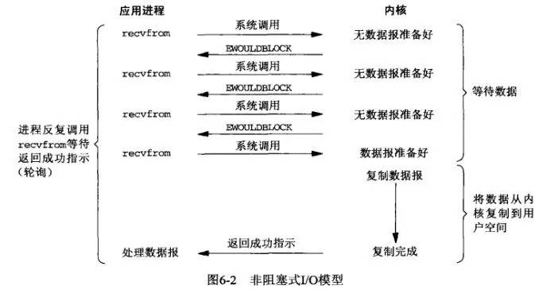

IO模型简介
基本概念
在讲 IO 模型之前我们先来了解下一些基本概念，同步和异步、阻塞和非阻塞，这两组概念不是 IO 所特有，而是任何调用都会有这两组概念。
同步、异步
- 同步调用：A 调用 B，B 的处理结果只会在调用中返回，如果 A 不询问，B 不会主动告诉 A 结果。
- 异步调用：A 调用 B，B 在接到调用后先告诉 A 我已经接到调用了，然后异步去处理，处理完之后通过回调等方式再通知 A。
同步、异步是针对被调用方来说的，而且强调的是被调用方告诉调用方结果的方式，如果需要调用方主动请求才告诉结果就是同步，如果被调用方主动告诉调用方结果就是异步。
阻塞、非阻塞
- 阻塞调用：A 调用 B，A 一直等着 B 的返回，别的事情什么也不干。
- 非阻塞调用：A 调用 B，A 不会一直等着 B 的返回，可以先去忙别的事情。
阻塞、非阻塞主要是针对调用方来说的，强调的是调用方在等待结果时的状态，如果什么都不干专心等待结果就是阻塞，如果在等待结果的同时还干点其他事就是非阻塞。
形象话的例子
上面说的概念可能不太好理解，那么我们就用一个生活化的例子帮我们理解，比如如下的一个场景：小明烧开水，这里调用方是小明，被调用方是水壶。
同步阻塞
小明使用一个普通水壶，按下开关后，坐在水壶前面，别的事情什么都不做，一直等着水烧好。
同步非阻塞
小明使用一个普通水壶，按下开关后，去看电视，然后每过一会去看下水是否烧好。
异步阻塞
小明使用了一个带提醒功能的水壶，按下开关后，但是还是坐在水壶前面，别的事情什么都不做，一直等着水烧好。
异步非阻塞
小明使用了一个带提醒功能的水壶，按下开关后，去看电视，水烧好后，水壶会通过响铃提醒小明。
Java IO 模型
在 Java 语言中，一共提供了三种 IO 模型，分别是阻塞 IO（BIO）、非阻塞 IO（NIO）、异步 IO（AIO）。
BIO
同步阻塞 I/O 模式，数据的读取写入必须阻塞在一个线程内等待其完成。
NIO
同时支持阻塞与非阻塞模式，但主要是使用同步非阻塞 IO。
AIO
异步非阻塞 I/O 模型。
Linux IO 模型
Java IO 操作其实是依赖操作系统的 IO 操作来实现的，由于生产服务器基本上都是 Linux 系统，所以我们来了解下 Linux 五种 IO 模型。
阻塞 IO 模型
阻塞 IO 是最简单的 IO 模型，一般表现为进程或线程等待某个条件，如果条件不满足，则一直等下去。条件满足，则进行下一步操作。
应用进程通过系统调用 recvfrom 接收数据，但由于内核还未准备好数据报，应用进程就会阻塞住，直到内核准备好数据报，recvfrom 完成数据报复制工作，应用进程才能结束阻塞状态。
阻塞 IO 模型简单，但是在等待数据的过程中应用进程一直阻塞，导致效率低下。
非阻塞 IO 模型
非阻塞的 IO 模型在数据未准备好时，不再一味的等着，而是直接返回。然后通过轮询的方式，不停的去问内核数据准备有没有准备好。如果某一次轮询发现数据已经准备好了，那就把数据拷贝到用户空间中。

应用进程通过 recvfrom 调用不停的去和内核交互，直到内核准备好数据。如果没有准备好，内核会返回 error，应用进程在得到 error后，过一段时间再发送 recvfrom 请求。在两次发送请求的时间段，进程可以先做别的事情。
非阻塞 IO 虽然提高了应用程序的效率，但是有可能会造成 IO 操作的延时，因为数据有可能在两次轮询的间隙准备好，而 IO 操作必须在下一次轮询时才能进行。另外如果数据准备时间很长，那么就会进行很多次不必要的轮询。
信号驱动 IO 模型
信号驱动 IO 模型会在数据准备好之后给应用程序发送一个信号，提醒应用程序数据已经准备好，这样应用程序就不必进行轮询，数据读写也会比较及时。

应用进程预先向内核注册一个信号处理函数，然后用户进程返回，并且不阻塞，当内核数据准备就绪时会发送一个信号给进程，用户进程便在信号处理函数中开始把数据拷贝的用户空间中。
使用这种模型应用程序会有些复杂。
IO 复用模型
IO 复用模型是把多个进程的 IO 注册到同一个管道上，这个管道会统一和内核进行交互。当管道中的某一个请求需要的数据准备好之后，进程再把对应的数据拷贝到用户空间中。
IO多路转接是多了一个 select 函数，多个进程的 IO 可以注册到同一个 select 上，当用户进程调用该 select ， select 会监听所有注册好的 IO，如果所有被监听的 IO 需要的数据都没有准备好时， select 调用进程会阻塞。当任意一个 IO 所需的数据准备好之后， select 调用就会返回，然后进程在通过 recvfrom 来进行数据拷贝。这里的 IO 复用模型，并没有向内核注册信号处理函数，所以，他并不是非阻塞的。进程在发出 select 后，要等到 select 监听的所有IO操作中至少有一个需要的数据准备好，才会有返回，并且也需要再次发送请求去进行文件的拷贝。
异步 IO 模型
异步IO模型是应用进程把 IO 请求传给内核后，完全由内核去操作文件拷贝，内核完成相关操作后，会发信号告诉应用进程本次 IO 已经完成。
用户进程发起 aio_read 操作之后，给内核传递描述符、缓冲区指针、缓冲区大小等，告诉内核当整个操作完成时，如何通知进程，然后就立刻去做其他事情了。当内核收到 aio_read 后，会立刻返回，然后内核开始等待数据准备，数据准备好以后，直接把数据拷贝到用户控件，然后再通知进程本次 IO 已经完成。
同步还是异步？
上面我们讲了 Linux 五种 IO 模型，那么这五种模型哪些是同步哪些是异步的呢？答案是只有异步 IO 模型是异步的，其余四种都是同步的。
整个 IO 的过程分为两步，第一步等待数据准备，第二步将数据从内核拷贝到进程中。只有这两步都是异步的，整个 IO 才能说是异步的。
参考文档
本作品采用知识共享署名 4.0 国际许可协议进行许可，转载请注明原文链接
本文链接：https://schhx.github.io/2019/04/21/IO模型简介/